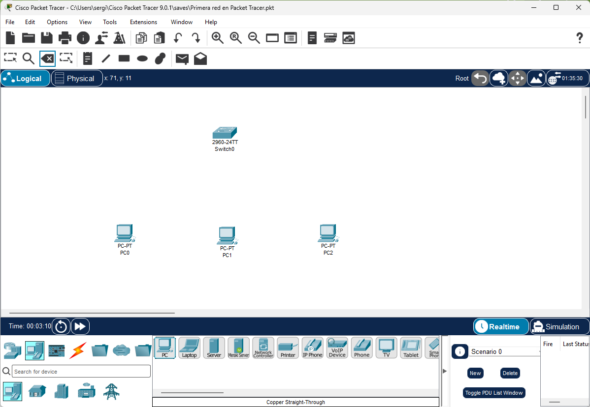
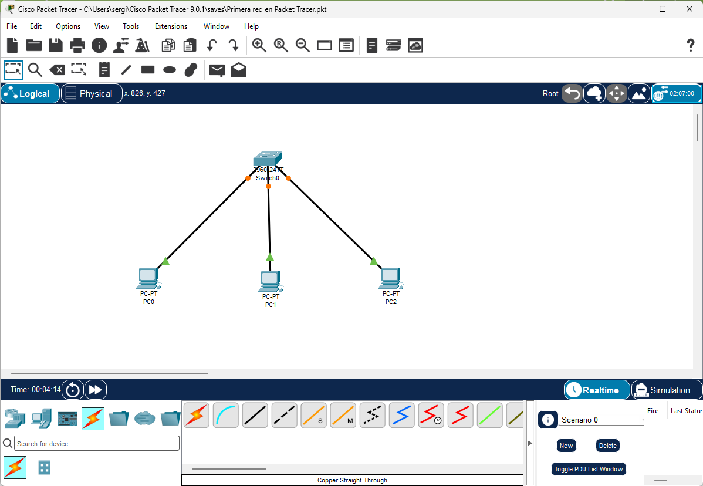
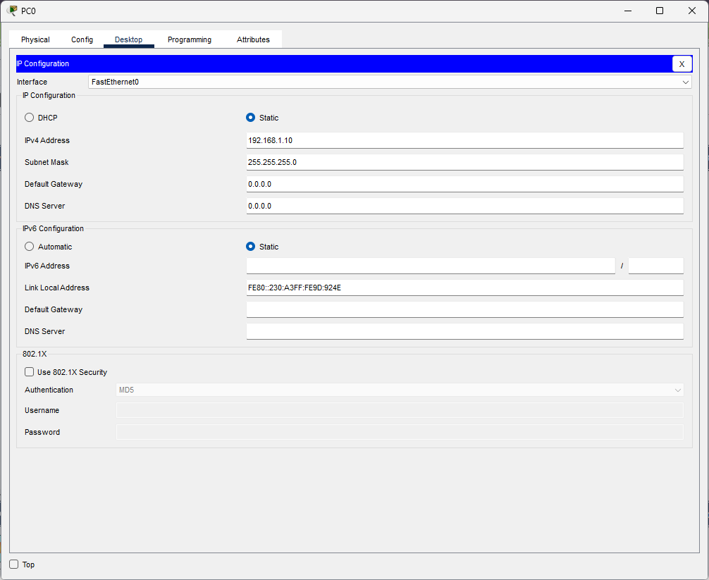
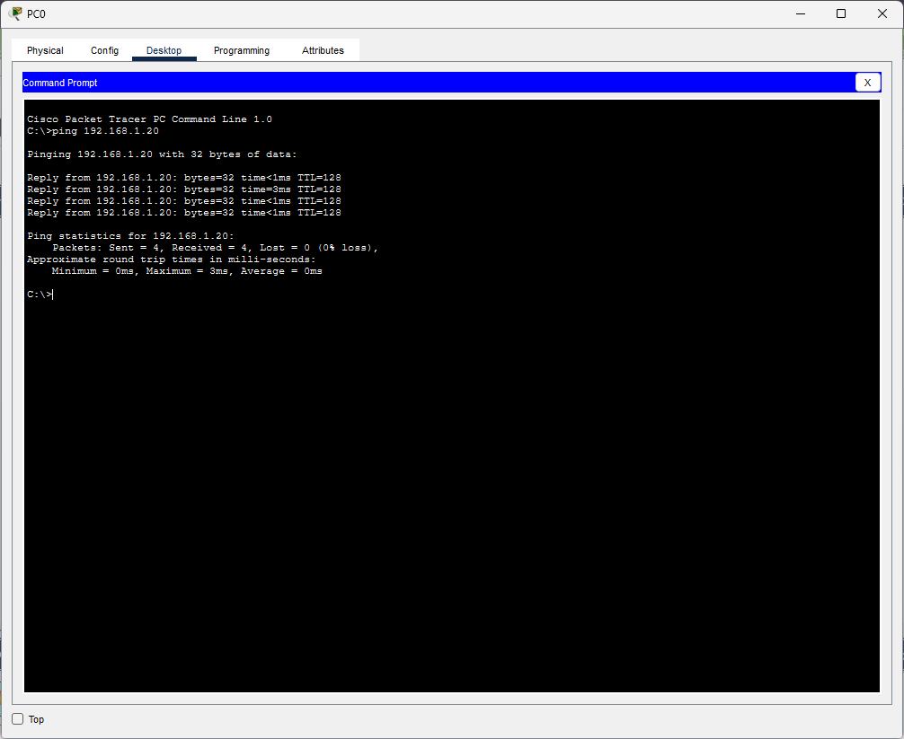
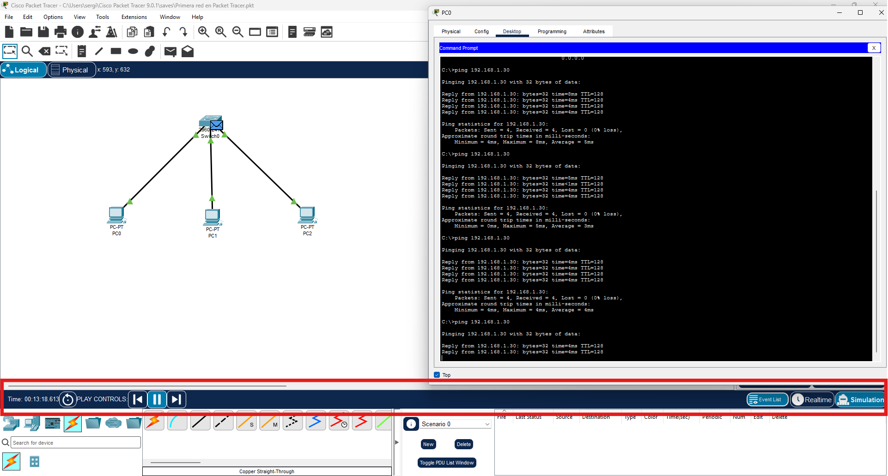

Primera red en Packet Tracer
En el punto anterior nos familiarizamos con la interfaz de Packet Tracer. Ahora vamos a montar nuestra primera red completa y funcional: varios ordenadores conectados a un switch, con sus IPs correctamente configuradas y verificando que se comunican entre sí mediante ping.
Esta práctica puede parecer sencilla, pero es el fundamento de todo lo que haremos después. Si entendemos bien por qué funciona — y por qué falla cuando algo está mal — el resto de la unidad será mucho más fácil.
¿Qué vamos a montar?
Una red LAN simple con esta topología:
PC0 (192.168.1.10/24) ──┐
PC1 (192.168.1.20/24) ──┤── Switch ── (red 192.168.1.0/24)
PC2 (192.168.1.30/24) ──┘
Tres PCs conectados a un switch, todos en la misma red 192.168.1.0/24. Cualquier PC debe poder hacer ping a cualquier otro.
Paso a paso
Paso 1 — Añadir los dispositivos
- Abre Packet Tracer con un proyecto nuevo (File → New).
- En el panel de dispositivos, selecciona la categoría End Devices y arrastra 3 PCs al área de trabajo.
- Selecciona la categoría Switches y arrastra 1 Switch (modelo 2960) al centro del área de trabajo.
- Organiza los dispositivos visualmente: el switch en el centro y los PCs alrededor.


Renombrar los dispositivos
Haz doble clic sobre el nombre del dispositivo (debajo del icono) para cambiarlo. Renombrar los dispositivos con nombres descriptivos (PC-Sergio, PC-Ana, PC-Servidor) hace el esquema mucho más claro. En el proyecto de la empresa esto será imprescindible.
Paso 2 — Conectar los dispositivos
- En el panel de dispositivos, selecciona la categoría Connections.
- Elige el cable negro (ethernet).
- Haz clic en PC0 — aparece una lista de interfaces disponibles. Selecciona FastEthernet0.
- Haz clic en el Switch — selecciona cualquier puerto disponible (FastEthernet0/1, FastEthernet0/2...).
- Repite el proceso para PC1 y PC2, usando puertos diferentes del switch.


Espera unos segundos hasta que todos los indicadores estén en verde. Si alguno sigue en rojo, revisa que el cable esté bien conectado en ambos extremos.
Paso 3 — Configurar las direcciones IP
Ahora asignamos una IP a cada PC. Hay dos formas de hacerlo en Packet Tracer:
Método A — Por formulario (Config): 1. Doble clic en PC0. 2. Pestaña Config → FastEthernet0. 3. Introduce la IP y la máscara.
Método B — Por Desktop (más realista): 1. Doble clic en PC0. 2. Pestaña Desktop → IP Configuration. 3. Selecciona Static e introduce los datos.
Usaremos el Método B porque simula mejor la configuración real de Windows.
Configuración de cada PC:
| Dispositivo | IP Address | Subnet Mask | Default Gateway |
|---|---|---|---|
| PC0 | 192.168.1.10 | 255.255.255.0 | (vacío por ahora) |
| PC1 | 192.168.1.20 | 255.255.255.0 | (vacío por ahora) |
| PC2 | 192.168.1.30 | 255.255.255.0 | (vacío por ahora) |


¿Por qué no ponemos gateway todavía?
El gateway (puerta de enlace) es la dirección IP del router que nos permite salir a otras redes. Como todos los PCs están en la misma red (192.168.1.0/24), pueden comunicarse directamente entre ellos sin necesidad de router. El gateway solo es necesario cuando queremos llegar a una red diferente. Lo veremos en el punto 4.
Paso 4 — Verificar la conectividad con ping
El comando ping envía paquetes ICMP a una dirección IP y espera respuesta. Es la herramienta de diagnóstico más básica y útil de las redes.
- Doble clic en PC0.
- Pestaña Desktop → Command Prompt.
- Ejecuta:
Si todo está bien, verás algo así:


4 paquetes enviados, 4 recibidos, 0 pérdidas → la comunicación funciona perfectamente.
El primer ping puede fallar
Es normal que el primer paquete de un ping aparezca como "Request timeout". Esto ocurre porque el switch necesita aprender la dirección MAC del destino mediante ARP antes de poder enviar el paquete. A partir del segundo intento, la comunicación es directa. Si todos los paquetes fallan, hay un problema de configuración.
Paso 5 — Verificar la configuración con ipconfig
Al igual que en Windows real, en Packet Tracer podemos usar ipconfig para ver la configuración de red del equipo:
C:\>ipconfig
FastEthernet0 Connection:(default port)
Connection-specific DNS Suffix..:
Link-local IPv6 Address.........: FE80::201:97FF:FE47:6B73
IP Address......................: 192.168.1.10
Subnet Mask.....................: 255.255.255.0
Default Gateway.................:
Veremos la IP asignada, la máscara y que el gateway está vacío (como esperábamos).
El modo Simulación: viendo los paquetes en movimiento
Una de las funciones más didácticas de Packet Tracer es el modo Simulación, que nos permite ver los paquetes moviéndose por la red paso a paso.


Cómo usarlo:
- Haz clic en el botón Simulation (reloj amarillo, esquina inferior derecha).
- En PC0, abre el Command Prompt y ejecuta
ping 192.168.1.30. - En el panel de simulación, haz clic en Play o usa el botón Capture/Forward para avanzar paso a paso.
- Observa cómo los paquetes (representados como sobres de colores) viajan desde PC0 hasta el switch y desde el switch hasta PC2.
- Haz clic sobre un paquete para ver su contenido: dirección IP origen y destino, dirección MAC, protocolo...
Filtra los protocolos en simulación
En el modo Simulación hay una opción Edit Filters que permite mostrar solo los protocolos que te interesan (ICMP para ping, ARP para resolución de MAC...). Si no filtras, verás muchos protocolos de fondo que pueden distraer.
¿Qué pasa si algo falla?
Si el ping no funciona, estas son las causas más habituales y cómo diagnosticarlas:
| Síntoma | Causa probable | Solución |
|---|---|---|
Request timeout en todos los paquetes |
IP mal configurada o máscara incorrecta | Verificar IP y máscara en ambos PCs |
| Indicador de enlace en rojo | Cable no conectado o puerto apagado | Reconectar el cable |
| Indicador de enlace en naranja permanente | Puerto del switch bloqueado por STP | Esperar unos segundos o usar PortFast |
Destination host unreachable |
Los PCs están en redes diferentes | Verificar que las IPs son de la misma red |
Error clásico: IPs en redes distintas
Si PC0 tiene 192.168.1.10/24 y PC1 tiene 192.168.2.10/24, aunque las IPs parezcan similares están en redes diferentes (192.168.1.x vs 192.168.2.x). El ping fallará con "Destination host unreachable" porque el equipo sabe que el destino no está en su red y necesita un router para llegar — que no tenemos todavía.
Práctica para entregar
Fichero: ud04_practica02.pkt
Entrega: Aules
Monta la siguiente red en Packet Tracer y verifica que funciona correctamente:
Red del departamento de Desarrollo — TechSolutions S.L.
- 4 PCs conectados a 1 switch
- Red:
10.10.1.0/24 - IPs de los PCs:
10.10.1.10,10.10.1.11,10.10.1.12,10.10.1.13 - Máscara:
255.255.255.0
Lo que debes entregar:
- El fichero
.pktcon la red montada y los dispositivos renombrados (PC-Dev1, PC-Dev2, PC-Dev3, PC-Dev4). - Una captura de pantalla del ping desde PC-Dev1 a PC-Dev4 mostrando 0% de pérdida.
- Una captura del comando
ipconfigen PC-Dev1 mostrando la IP correcta.
Criterios de evaluación
- Red montada correctamente con los dispositivos renombrados (3 puntos)
- Ping exitoso entre todos los PCs (4 puntos)
- Captura de ipconfig correcta (3 puntos)